Compare forecasters on past or expected future performance.
scoring rules — three classical uses
6 / 46
Three uses of strictly proper scoring rules
use 2 of 3
Eliciting opinions (Brier 1950, Savage 1971)
Penalise forecasters using a loss function. Strict propriety incentivises honest reporting.
scoring rules — three classical uses
7 / 46
Three uses of strictly proper scoring rules
use 3 of 3
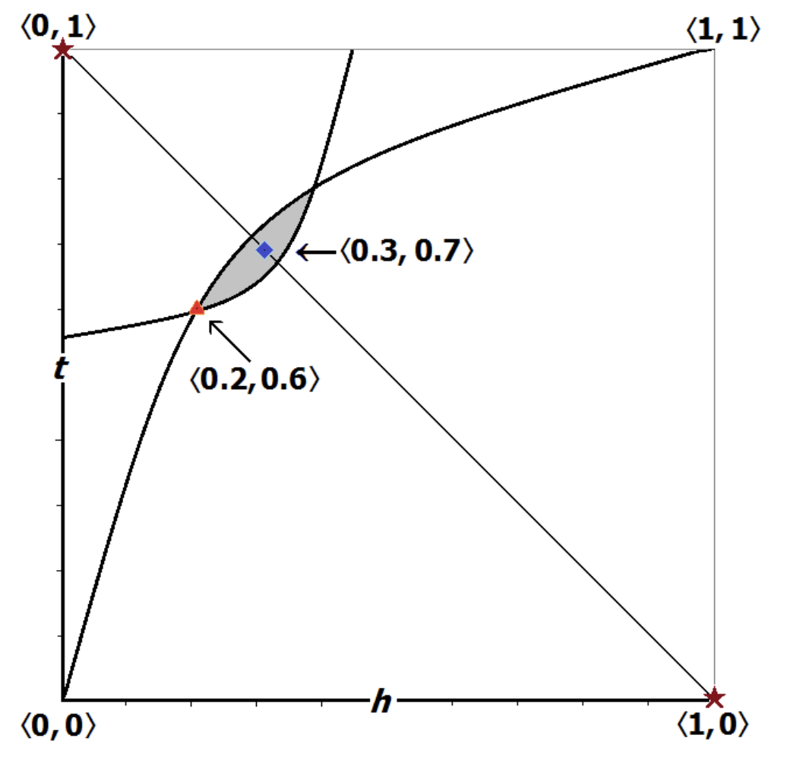
Justifying epistemic norms
Accuracy arguments for probabilism, conditionalization, deference principles, etc.
scoring rules — three classical uses
8 / 46
Scoring rules — the basics
A binary scoring rule is a pair $(g_1, g_0)$. If the forecast for event $E$ is $x \in [0, 1]$ and $Y = \mathbf{1}_E$, the loss is $g_Y(x)$. Expected loss under belief $p$:
$m(x; p) = p\, g_1(x) + (1-p)\, g_0(x).$
The rule is strictly proper if $m(\cdot\,; p)$ has its unique minimum at $x = p$, for every $p \in [0, 1]$.
Two canonical strictly proper rules
Brier: $g_1(x) = (1-x)^2,$ $g_0(x) = x^2.$
Log: $g_1(x) = -\ln x,$ $g_0(x) = -\ln(1 - x).$
Absolute, Euclidean, and spherical rules are not strictly proper.
basics — definition and the two canonical strictly proper rules
9 / 46
Section II
Loss functions for imprecise probabilities
10 / 46
Coherent sets of strictly desirable gambles
$\Omega = \{\omega_1, \ldots, \omega_n\}$. $\mathcal{G}(\Omega) = \mathbb{R}^n$ — gambles. $\mathcal{P}$ — probability simplex on $\Omega$.
A set $\mathcal{D} \subseteq \mathcal{G}(\Omega)$ is a coherent set of strictly desirable gambles iff:
$\mu_i$ finite Borel, $\mu_i \ll \mathrm{Leb}$. RN density $m_i = d\mu_i / d\mathrm{Leb}$ is the per-gamble cost at $\omega_i$.
error set $\mathcal{D}_P \triangle \mathcal{D}^1$ for the cone on the previous slide
error loss — generalising scoring rules to sets of gambles
12 / 46
$D$-propriety
For $p \in \mathcal{P}$, let $\mathcal{D}_p \;=\; \{g \in \mathcal{G}(\Omega) : \langle p, g\rangle > 0\} \;\cup\; (\mathbb{R}^n_{\geq 0} \setminus \{0\})$ — the set of gambles with positive expected value relative to the probability mass function $p$.
Definition
A finite error loss $(L_1, \ldots, L_n)$ is $D$-proper if, for every $p \in \mathcal{P}$ and every measurable $\mathcal{D}$ with $\mathrm{Leb}(\mathcal{D} \triangle \mathcal{D}_p) > 0$,
If $L$ is $D$-proper, then the admissible sets of desirable gambles are (up to a set of measure zero) exactly the precise models $\{\mathcal{D}_p : p \in \mathcal{P}\}.$
$D$-propriety — strict-min over measurable sets of gambles, not just precise forecasts
13 / 46
Complete class theorem (Wald, SSK)
For each $\mathcal{D} \in \mathcal{M}$, the loss profile is
$L(\mathcal{D}) = (L_1(\mathcal{D}), \ldots, L_n(\mathcal{D})) \in \mathbb{R}^n_{\geq 0}$.
Admissible
$\mathcal{D}$ is admissible iff there is no $\mathcal{D}'$ with $L(\mathcal{D}') \preceq L(\mathcal{D})$, $L(\mathcal{D}') \ne L(\mathcal{D})$.
Bayes optimal
$\mathcal{D}$ is Bayes optimal iff there is $p \in \mathcal{P}$ with $\mathcal{D} \in \arg\min_{\mathcal{D}' \in \mathcal{M}} \sum_i p_i\, L_i(\mathcal{D}').$
complete class — admissibility and Bayes optimality coincide
14 / 46
Beyond precise probabilities
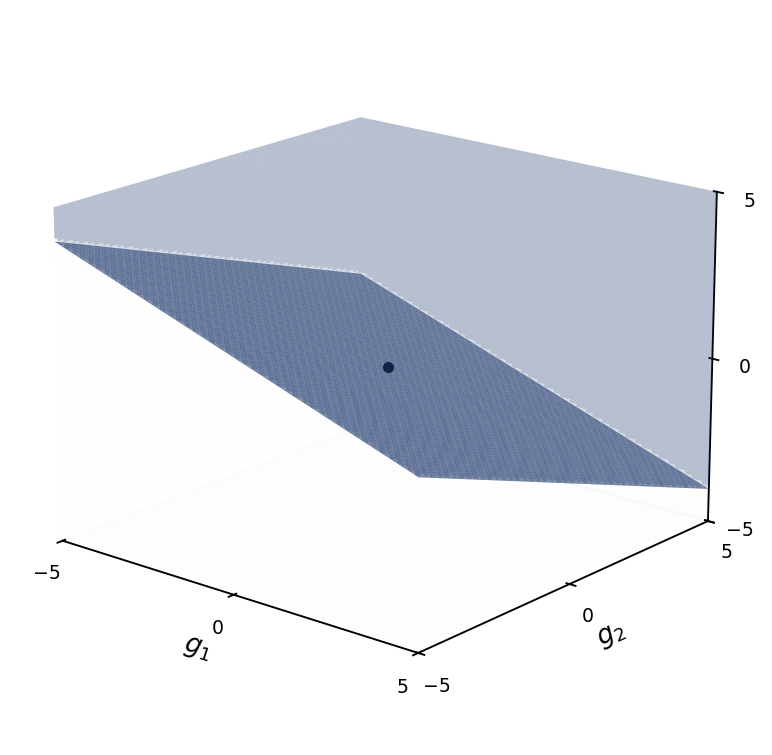
halfspace $\mathcal{D}_p$ for $p = (\tfrac{2}{10}, \tfrac{3}{10}, \tfrac{5}{10})$
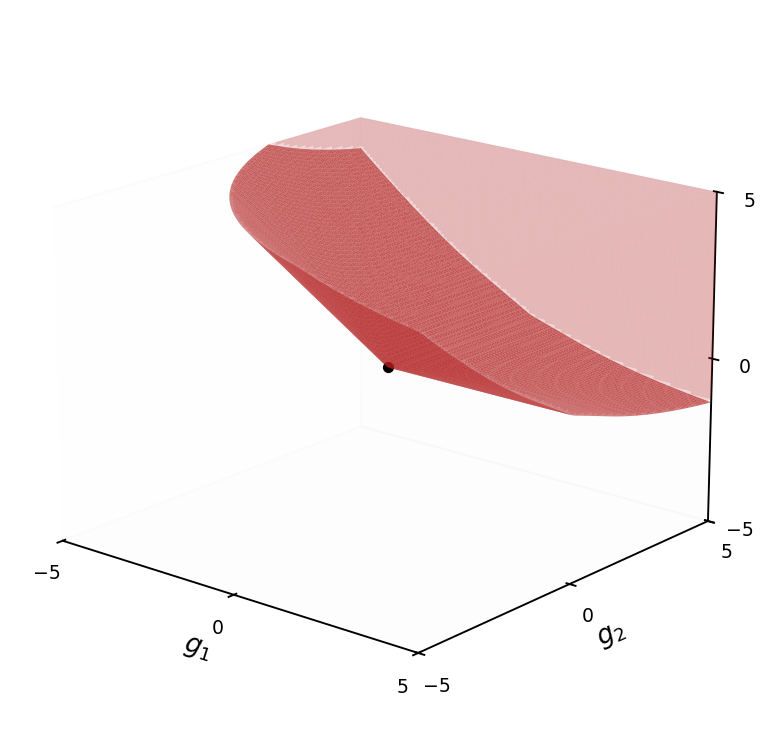
coherent set $\mathcal{D}_P$, $P$ = closed ball around $p$ in the simplex
Now. $D$-proper $\Rightarrow$ halfspaces $\mathcal{D}_p$ are admissible.
Want. Error losses where coherent $\mathcal{D}$ are admissible.
Can we find such an error loss function for any coherent $\mathcal{D}$?
target — coherent sets, not just halfspaces, as admissible Bayes optima
15 / 46
16 / 46
Impossibility results
Seidenfeld et al. (2012) establish that there is no strictly proper, continuous real-valued scoring rule for lower and upper probability forecasts.
impossibility — no strictly proper continuous real-valued scoring rule for IP
17 / 46
Impossibility results
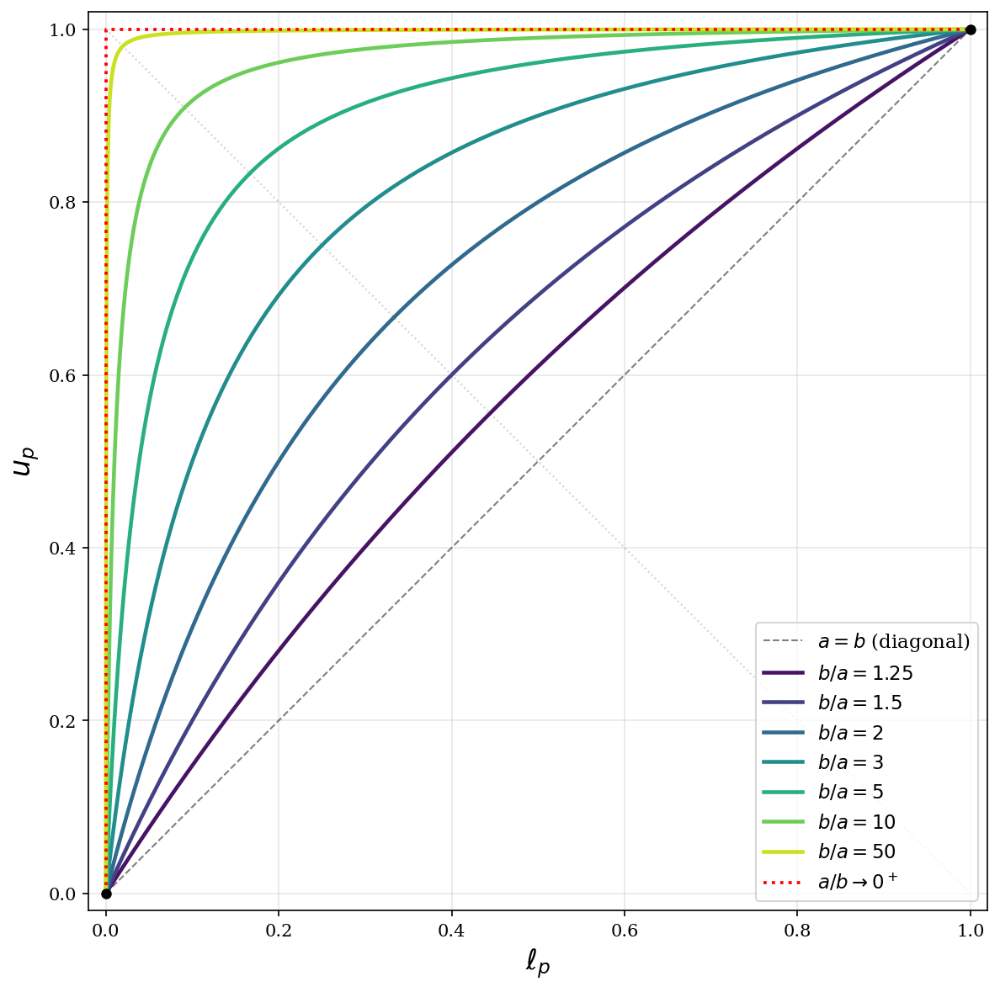
parametric curves $(\ell_p, u_p)$, $t\in[0,1]$, for piecewise-linear sign-preserving maps
18 / 46
Section III
Ecological rationality and control problems
19 / 46
Ecological rationality
Cognitive strategies should be evaluated by their success in helping people (or even nonhuman animals) achieve their goals (including epistemic goals) within specific contexts.
opening — ecological rationality (Douven 2025)
20 / 46
The strategy selection problem
How does a cognitive system identify which tool is appropriate for which task?
opening — strategy selection (Rieskamp & Otto 2006; Douven 2025)
21 / 46
Control problems
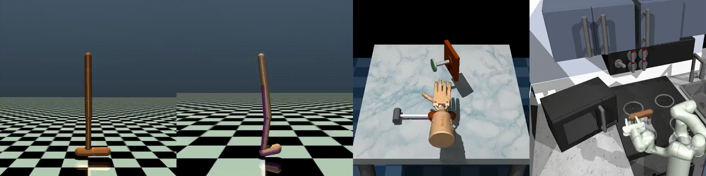
A control problem
A system whose state changes over time.
An agent with a range of available actions that influence how it changes.
An objective the agent wants the system to reach or maintain.
Pick actions over time so the system evolves toward the objective.
Examples
Thermostat. Heater on/off to hold room temperature near a setpoint.
Cruise control. Throttle and brake to hold a target speed.
Autopilot. Deflect control surfaces to fly a planned trajectory.
Reinforcement learning. Learn the strategy from experience when the dynamics and objective aren't known up front.
control problem — state + available actions + objective
22 / 46
Reinforcement learning as a control problem
control loop — agent acts, environment responds
23 / 46
New use case for IP loss functions
IP loss function
a video game agent learns its own uncertainty through an IP loss
24 / 46
Section IV
Interval DQN
25 / 46
Standard DQN
1
see s
Environment hands a state s.
2
score actions
Q-net: one number per action.
3
pick best
Act a = argmaxa Q(s, a).
4
step
Environment returns r and s′.
5
update
MSE: pull Q(s, a) toward T.
standard DQN training loop — one panel per step
26 / 46
Credal Interval DQN
1
see s
Environment hands a state s.
2
score intervals
Q-net: an interval per action.
3
Hurwicz pick
Act a* = argmaxa [Qℓ + c·(Qu − Qℓ)].
4
step
Environment returns r and s′.
5
update + self-tune
Interval loss. Coverage tracker adjusts t.
credal interval DQN training loop — ★ marks what's new vs. standard DQN
27 / 46
The IP loss function
For an interval prediction $[\ell, u]$ and a target $v$:
$L(\ell, u, v;\, t) \;=\; t \cdot \mathbf{1}_{v \notin [\ell, u]} \cdot \min\!\bigl((v - \ell)^2, (v - u)^2\bigr) + (1 - t) \cdot \max\!\bigl((v - \ell)^2, (v - u)^2\bigr)$
Adaptive $c$ at deployment. Make $c$ a decreasing function of the per-state interval width $w(s,a) = Q_u - Q_\ell$: confident states (tight intervals) ride high; wide intervals pull $c \to 0$. No retraining.
action selection — Hurwicz combination of $Q_\ell$ and $Q_u$
29 / 46
Two ways imprecision enters the model
① Modeller's input
supplied at problem-setup time
An uncertainty set on the environment.
For our lander: wind $\in [0, 15]$.
Used during training as a domain-randomisation sampler — each episode draws a fresh wind from the set.
② Learned interval $Q$
extracted from training data
The network outputs $[Q_\ell(s,a),\, Q_u(s,a)]$ per action.
Width varies with the input — wider where the network is less sure.
A model-internal uncertainty signal that a scalar-network is structurally incapable of learning.
Both feed one risk knob at deployment.
central conceptual point
30 / 46
In distribution — tight intervals
in-distribution — the model is confident
31 / 46
Out of distribution — wide intervals
out of distribution — the model widens its bracket
32 / 46
Section V
Application
33 / 46
The application: continuous-state lunar lander
application — 8-dim continuous state, four discrete actions; OOD shifts wind and gravity
34 / 46
Cautious deployment ($c = 0$)
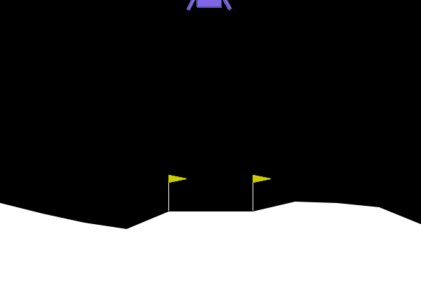
reward +302 in this trial
Acts on the lower bound. Above-median trial for illustration.
same model — cautious knob position
35 / 46
Daring deployment ($c = 1$)
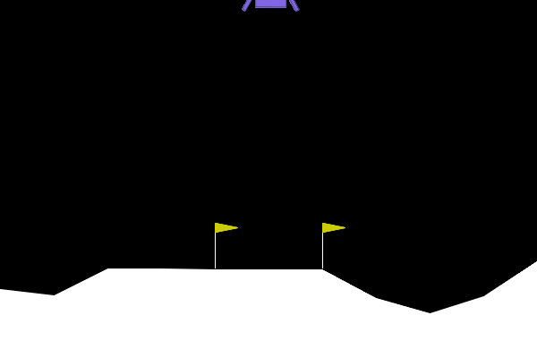
reward $-1006$ in this trial
Same network weights as the previous slide. Only $c$ changed.
same model — daring knob position
36 / 46
Interval width grows under shift
Left: width climbs with wind power; range-trained training band shaded.
Right: up to $+60\%$ wider at the combined OOD condition. Qualitative trend on one environment.
5 seeds × 30 episodes per condition
37 / 46
Training dynamics
Bold line = smoothed; faint = raw per-episode. One seed × 800 ep, range-trained on wind $\in [0, 15]$.
Reward climbs past the $200$ solve threshold; width rises then settles; coverage and $t$ oscillate around their equilibria.
training dynamics — coverage / $t$ / width / loss in the same control loop
38 / 46
Wind $= 0$ (in-distribution)
scalar DQN baseline
credal interval DQN (adaptive $c$)
reward $+241$
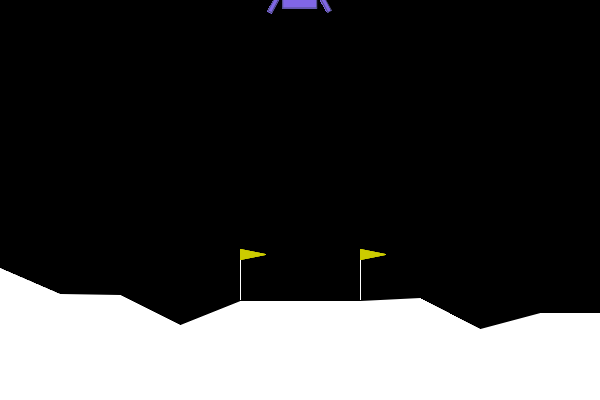
reward $+271$
Single illustrative trials. Both land cleanly.
wind progression — in-distribution
39 / 46
Wind $= 15$ (boundary)
scalar DQN baseline
credal interval DQN (adaptive $c$)
reward $+225$
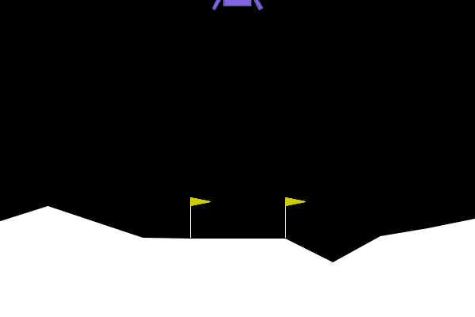
reward $+260$
Out of distribution for the scalar agent; boundary for the credal one.
wind progression — boundary
40 / 46
Wind $= 25$ (far OOD)
scalar DQN baseline
credal interval DQN (adaptive $c$)
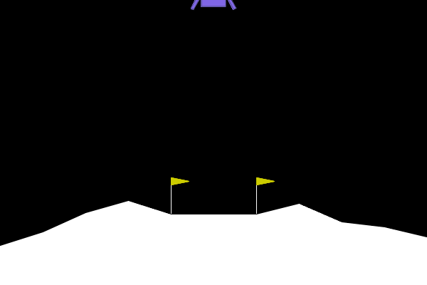
reward $-4$
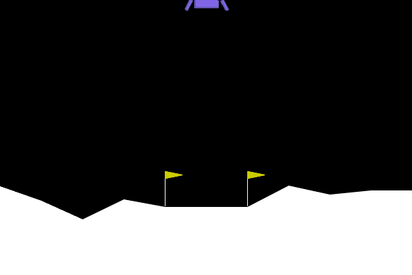
reward $+232$
Far outside any training distribution. Single illustrative trials.
wind progression — far OOD
41 / 46
Gravity $= -11.99$ (OOD on a different axis)
scalar DQN baseline
credal interval DQN (adaptive $c$)
reward $+29$
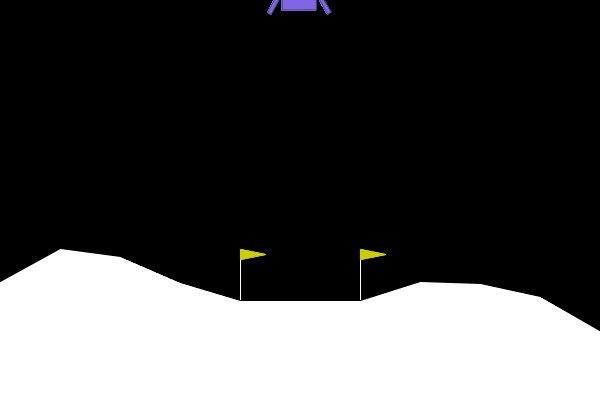
reward $+244$
Neither agent saw varied gravity during training — OOD for both.
gravity progression — far OOD on a second axis
42 / 46
Combo OOD (wind $= 25$, gravity $= -11.99$)
scalar DQN baseline
credal interval DQN (adaptive $c$)
reward $-57$
reward $+216$
Both axes shifted at once — the hardest condition in the eval grid for both controllers.
Credal trial chosen to show a successful landing — this happens in $19$ of $45$ rollouts at this condition.
combo OOD — wind and gravity shifted simultaneously
43 / 46
Aggregate performance
Interval variants above the scalar baseline at every condition; range-trained adaptive-$c$ beats both fixed-$c$ baselines on $7$ of $11$ conditions.
5 seeds × 30 episodes per condition; 800 training episodes; no hyperparameter search.
aggregate — medians across 5 seeds
44 / 46
Credal DQN Generalized
1
see s
Environment hands a state s.
2
score intervals
Q-net: an interval per action.
3
Hurwicz pick
Act a* = argmaxa [Qℓ + c·(Qu − Qℓ)].
4
step
Environment returns r and s′.
5
update + self-tune
Interval loss. Coverage tracker adjusts t.
credal interval DQN training loop — ★ marks what's new vs. standard DQN
45 / 46
Take home lessons
Well-behaved error loss functions make only coherent imprecise $\mathcal{D}$ admissible.
A wide class of well-behaved error loss functions exist.
Imprecise probability and IP loss functions can help solve the strategy selection problem.
We can dynamically adapt IP loss functions to incentivise learning an appropriate amount of imprecision for a given environment / task.
Imprecision can serve as an internal signal of OOD conditions.
take home lessons
46 / 46
← / → to navigate · space advances · tap left/right edges on mobile